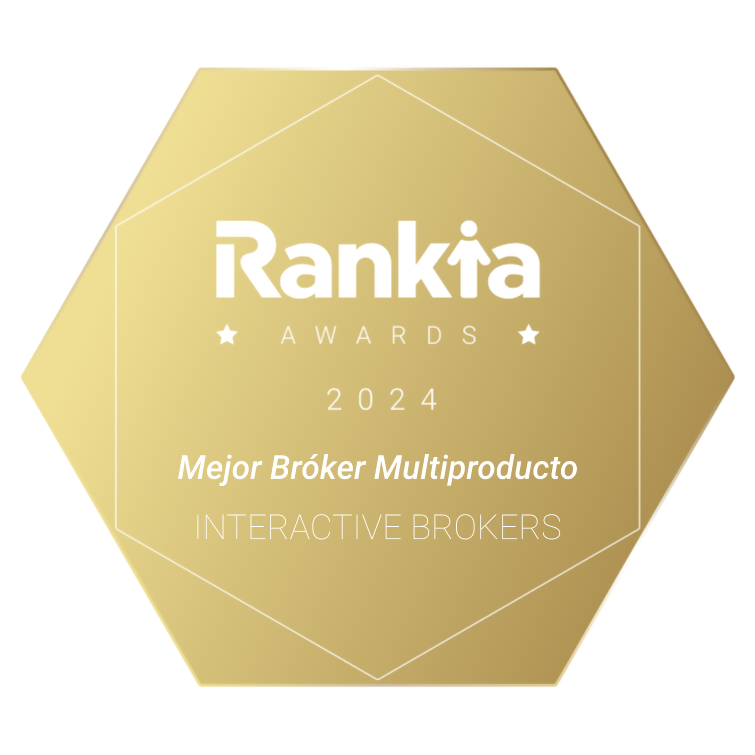

Auszeichnungen von Interactive Brokers

Bester Online-Broker 2023: schon zum 6. Jahr in Folge von Barron’s zur Nr. 1 gekürt
Interactive Brokers wird regelmäßig als führender, kostengünstiger Broker gewürdigt. Unsere Broker-Plattform bietet Nutzern ausgefeilte Trading-Technologie und Zugang zu Aktien, ETFs, Optionen, Futures, Anleihen, Fonds und mehr an über 160 Märkten weltweit. In der folgenden Tabelle finden Sie eine Übersicht über unsere neuesten Awards und Auszeichnungen.
Wählen Sie ein Jahr aus, um ältere Auszeichnungen anzuzeigen.
2024 Preqin Awards:
 |
Zu einem „Top Prime Broker“ ernannt |
„Best Online Brokers 2024“ von BrokerChooser: Ganzen Artikel lesen
 |
Bester Online-Broker 2024 Bester Aktien-Broker 2024 Bester Broker für Day-Trading 2024 Bester Broker für Anlagen 2024 Bester Broker für Margin-Handel Nr. 1 in der Kategorie „Bester Online-Broker in Singapur“: Mehr erfahren Nr. 1 in der Kategorie „Bester Online-Broker in Deutschland“: Mehr erfahren Nr. 1 in der Kategorie „Online-Broker & Trading-Platformen in Großbritannien“: Mehr erfahren Nr. 1 in der Kategorie „Bester Online-Broker in Kanada“: Mehr erfahren Nr. 1 in der Kategorie „Bester Online-Broker in Australien“: Mehr erfahren Nr. 1 in der Kategorie „Online-Broker & Trading-Platformen in Indien: Mehr erfahren Nr. 1 in der Kategorie „Bester Broker für ESG-Anlagen“ Mehr erfahren |
Online-Broker-Bewertung 2024 von ForexBrokers.com: Ganzen Artikel lesen
 |
Nr. 1 im Anleihenhandel Nr. 1 beim Daytrading Nr. 1 bei ESG-Anlagen Nr. 1 bei Aktienbruchteilen Nr. 1 beim internationalen Handel Nr. 1 bei Anlageoptionen Nr. 1 bei mobilen Trading-Apps Nr. 1 bei der Order-Ausführung Nr. 1 bei Plattfomen & Tools Nr. 1 Plattform-Technologie Nr. 1 beim professionellen Trading Nr. 1 bei Sentiment-Anlagen Best in Class: Einsteiger Best in Class: Provisionen und Gebühren Best in Class: Lernressourcen Best in Class: Futures-Handel Best in Class: Wohlhabende Anleger Best in Class: IRA-Konten Best in Class: Optionshandel Best in Class: Recherche Best in Class: Gesamtwertung |
Investopedia 2024: Ganzen Artikel lesen
 |
Bester Broker für fortgeschrittene Trader Bester Broker für internationalen Handel Bestes Risikomanagement Beste Ideen beim Aktienhandel Bester Broker für algorithmischen Handel |
Online-Broker-Bewertung 2024 von ForexBrokers.com: Ganzen Artikel lesen
 |
Insgesamt 5 von 5 Sternen Nr. 1 beim professionellen Trading Nr. 1 beim ESG-Angebot Nr. 1 für Institutionelle Kunden Nr. 1 beim Investment-Angebot Nr. 1 Plattform-Technologie Best in Class: Gesamtwertung Best in Class: Algo-Trading Best in Class: Provisionen und Gebühren Best in Class: Kryptohandel Best in Class: Lernressourcen Best in Class: Mobile Trading-Apps Best in Class: Plattformen und Tools Best in Class: Trust Score Best in Class: Recherche |
Online-Broker-Bewertung 2024 von Nerdwallet: Ganzen Artikel lesen
 |
Bester Online-Broker für fortgeschrittene Trader |
2024 The Ascent – A Motley Fool Service Review: Ganzen Artikel lesen
 |
Bester Aktien-Broker für internationalen Handel |
Investing in the Web Global Broker Awards 2024: Ganzen Artikel lesen
 |
Bester Broker insgesamt Bester Broker für Optionen: Mehr erfahren Bester Broker für Anleihen: Mehr erfahren Bester Broker für Unternehmenskonten: Mehr erfahren Beste ESG- und Impact-Anlage-App (für Impact von Interactive Brokers): Mehr erfahren Bester Broker für LLCs: Mehr erfahren Beste europäische Trading-App: Mehr erfahren Beste europäische Trading-Plattform: Mehr erfahren Beste Trading-Plattform in den VAE: Mehr erfahren |
Benzinga Awards 2024: Ganzen Artikel lesen
 |
Bester Broker für Optionshandel Beste Daytrading-Software Beste Prop-Trading-Plattform |
Investors’ Chronicle Awards 2024: Ganzen Artikel lesen
 |
5 Star Winner – Platform 5 Star Winner – ISA Provider |
QualeBroker Awards 2024: Ganzen Artikel lesen
 |
Beste Trading-Plattform |
Rankia Awards for Best Brokers 2024: Ganzen Artikel lesen
|  | Bester Broker mit mehreren Produkten |
„Best Online Brokers of 2023“ von Matt Miller, Barron’s, 09.06.2023: Ganzen Artikel lesen
 |
Nr. 1 in der Kategorie „Bester Online-Broker”: 5 von 5 Sternen |
„Best Online Brokers 2023“ von BrokerChooser: Ganzen Artikel lesen
 |
Bester Online-Broker 2023 Bester Broker für Day-Trading 2023 Bester Aktien-Broker 2023 Bester Broker für Anlagen 2023 Nr. 1 in der Kategorie „Beste Online-Broker in Singapur“: Mehr erfahren Nr. 1 in der Kategorie „Online-Broker & Trading-Platformen in Großbritannien“: Mehr erfahren Nr. 1 in der Kategorie „Beste Online-Broker in Indien“: Mehr erfahren Nr. 1 in der Kategorie „Beste Broker für ESG-Anlagen“ Mehr erfahren |
Online-Broker-Bewertung 2023 von StockBrokers.com: Ganzen Artikel lesen
 |
Nr. 1 beim professionellen Trading Nr. 1 für aktives Trading Nr. 1 beim Futures-Handel Nr. 1 beim internationalen Handel Nr. 1 bei Anlageoptionen Nr. 1 Plattform-Technologie Nr. 1 bei Sentiment-Anlagen Nr. 1 bei ESG-Anlagen Best in Class: Optionshandel 5 von 5 Sternen: Mobile Trading-Apps 5 von 5 Sternen: Anlageoptionen 5 von 5 Sternen: Plattformen & Tools 5 von 5 Sternen in der Kategorie „Recherche“ |
Investopedia 2023: Ganzen Artikel lesen
 |
Bester Broker für fortgeschrittene Optionshändler |
Online-Broker-Bewertung 2023 von ForexBrokers.com: Ganzen Artikel lesen
Insgesamt 4,6 von 5 Sternen Bester Broker für internationalen Handel Bester Online-Broker für fortgeschrittene Trader |
Benzinga 2023
|
Bester Online-Broker für Anleihen – Ganzen Artikel lesen Insgesamt bester Online-Broker für Investmentfonds – Ganzen Artikel lesen Bester Broker für globale Options-Trader – Ganzen Artikel lesen |
Preqin Awards 2023:
 |
Zu einem „Top Prime Broker“ ernannt |
 |
Zu einem „Top Hedge Fund Custodian“ ernannt |
Online-Broker-Bewertung 2023 von TradingView Online: Ganzen Artikel lesen
 |
Bester Multi-Asset Broker |
Investing in the Web Global Broker Awards 2023: Ganzen Artikel lesen
 |
Bester Broker insgesamt Broker mit den niedrigsten FX-Gebühren: Mehr erfahren Bester Broker für Anleihen: Mehr erfahren Bester Broker für Unternehmenskonten: Mehr erfahren Beste ESG- und Impact-Anlage-App (für Impact von Interactive Brokers): Mehr erfahren Bester Broker für LLCs: Mehr erfahren Beste europäische Trading-Plattform: Mehr erfahren Beste Trading-Plattform in den VAE: Mehr erfahren Beste Anlage-Plattform in Großbritannien: Mehr erfahren |
Australian Finder Awards 2023: Ganzen Artikel lesen.
 |
Sieger in der Kategorie „Kundenzufriedenheit Aktienhandel“ Mehr erfahren |
 |
Bester Anbieter für weltweite Aktien |
 |
Bester Anbieter für aktive Trader |
Good Money Guide Awards 2023: Ganzen Artikel lesen
 |
Bester Anleihen-Broker Bester Futures-Broker Beste Optionshandelsplattform |
Ganadores de los Premios Rankia 2023 para Mejores Brokers: Ganzen Artikel lesen
 |
Bester „Multiproduct Broker“ |
„Best Online Brokers of 2022“ von Matt Miller, Barron’s, 25.03.2022: Ganzen Artikel lesen
 |
Nr. 1 in der Kategorie „Bester Online-Broker”: 5 von 5 Sternen Nr. 1 für aktive Trader Nr. 1 für Informationen |
Investopedia 2022: Ganzen Artikel lesen.
 |
Insgesamt 4,6 von 5 Sternen |
 |
Bester Broker für internationalen Handel |
 |
Bester Online-Broker für fortgeschrittene Trader |
Bewertung von StockBrokers.com 2022: Ganzen Artikel lesen
Nr. 1 in der Kategorie „Professionelle Tools“ Nr. 1 in der Kategorie „Futures-Handel” Nr. 1 in der Kategorie „Investment-Angebot” Nr. 1 beim internationalen Handel 5 von 5 Sternen in der Kategorie „Investment-Angebot“ 5 von 5 Sternen in der Kategorie „Recherche“ |
Online-Broker-Bewertung 2022 von ForexBrokers.com: Ganzen Artikel lesen
Nr. 1 in der Kategorie „Investment-Angebot” Nr. 1 in der Kategorie „Innovation” Nr. 1 für Institutionelle Kunden Insgesamt 5 von 5 Sternen 5 von 5 Sternen in der Kategorie „Provisionen und Gebühren“ 5 von 5 Sternen in der Kategorie „Investment-Angebot“ |
„Best Online Brokers 2022“ von BrokerChooser: Ganzen Artikel lesen
 |
Bester Online-Broker 2022 Bester Broker für Day-Trading 2022 Bester Broker für Anlagen 2022 |
Preqin Awards 2022:
 |
Zu einem „Top Prime Broker“ ernannt |
 |
Zu einem „Top Hedge Fund Custodian“ ernannt |
„Best Online Brokers of 2021“ von Matt Miller, Barron’s, 26.02.2021
 |
Nr. 1 in der Kategorie „Bester Online-Broker”: 5 von 5 Sternen Nr. 1 für aktive Trader Nr. 1 für Informationen Nr. 1 International Nr. 1 für Trading Mit der Genehmigung von Barron’s erneut veröffentlicht |
Bewertung von StockBrokers.com 2021: Ganzen Artikel lesen
 |
Insgesamt 5 von 5 Sternen Nr. 1 in der Kategorie „Professionelles Trading” Nr. 1 in der Kategorie für „Neues Tool” Nr. 1 in der Kategorie „Investment-Angebot” Nr. 1 beim internationalen Handel Nr. 1 beim Futures-Handel |
Broker-Bewertungen 2021 von Bankrate: Ganzen Artikel lesen
 |
Insgesamt 4,5 von 5 Sternen Beste Wahl für aktives Trading Beste Wahl für Margin-Trading Beste Wahl für Volumenrabatte |
Benzinga 2021
Bester Online-Broker für Anleihen – Ganzen Artikel lesen Bester Online-Broker für Investmentfonds – Ganzen Artikel lesen |
|
2021 Benzinga Global Fintech Awards – Lifetime Achievement 2021 Benzinga Global Fintech Awards – Best Paper Trading Platform |
2021 Preqin Awards:
 |
Zu einem „Top Hedge Fund Prime Broker“ ernannt |
 |
Zu einem „Top Hedge Fund Custodian“ ernannt |
„Best Online Brokers 2021“ von BrokerChooser: Ganzen Artikel lesen
 |
Bester Online-Broker 2021 Bester Broker für Day-Trading 2021 |
Stocks & Commodities Awards 2021
 |
Sieger 2021 im Bereich Aktien-Brokerage.2 Sieger 2021 im Bereich Futures-Brokerage.2 Sieger 2021 im Bereich Forex-Brokerage.2 |
Online-Broker-Bewertung 2021 von ForexBrokers.com: Ganzen Artikel lesen
 |
Insgesamt 4,5 von 5 Sternen 5 Sterne in der Kategorie „Investment-Angebot“ 4,5 Sterne in der Kategorie „Provisionen und Gebühren“ 4,5 Sterne in der Kategorie „Plattformen & Tools” 4,5 Sterne in der Kategorie „Recherche“ |
„ Best Online Brokers 2020“ von Barron’s
 |
Nr. 1 in der Kategorie „Bester Online-Broker”: 5 von 5 Sternen Nr. 1 für aktive Trader Nr. 1 für internationale Trader Nr. 1 für Anleger, die für das Alter vorsorgen |
StockBrokers.com Award 2020: Ganzen Artikel lesen
 |
Nr. 1 in der Kategorie „Provisionen und Gebühren” |
 |
Nr. 1 in der Kategorie „Investment-Angebot” |
 |
Nr. 1 in der Kategorie „Professionelles Trading” |
 |
Nr. 1 beim internationalen Handel |
 |
Nr. 1 beim Futures-Handel |
 |
Nr. 1 in der Kategorie „Innovation” |
 |
Insgesamt 4,5 von 5 Sternen |
NerdWallet Award 2020: Ganzen Artikel lesen
 |
Ausgezeichnet als „Bester Broker für kostengünstige Investments”. |
 |
Ausgezeichnet als „Bester Broker für Aktien-Trading-Plattformen und Recherchen (Unentschieden)”. |
Investopedia 2020: Ganzen Artikel lesen.
 |
Insgesamt 4,4 von 5 Sternen |
 |
Bester Online-Broker für internationalen Handel |
 |
Bester Online-Broker für fortgeschrittene Trader |
Benzinga Award 2020:
 |
Benzinga 2020: Beste Trading-Technologie |
Preqin Awards 2020:
 |
Zu einem „Top Prime Broker“ ernannt |
 |
Zu einem „Top Hedge Fund Custodian“ ernannt |
Preqin Awards 2020:
|
Top-Prime-Broker |
|
Top Hedge Fund Custodian |
2020 Good Money Guide Award: Ganzen Artikel lesen
 |
5 von 5 Sternen |
Canstar Awards 2020: Ganzen Artikel lesen.
 |
5-Sterne-Rating für „Hervorragendes Preis-/Leistungsverhältnis, Online-Aktienhandel – Trader“ |
 |
5-Sterne-Rating für „Hervorragendes Preis-/Leistungsverhältnis, Online-Aktienhandel – aktive Anleger“ |
 |
5-Sterne-Rating für „Hervorragendes Preis-/Leistungsverhältnis, Online-Aktienhandel – gelegentliche Anleger“ |
2020 Australian Finder Awards: Ganzen Artikel lesen.
 |
Bestes Konto für internationalen Aktienhandel |
 |
Beste Aktien-Trading-Pattform für aktive Trader |
 |
Die besten kostengünstigen Broker-Services |
Auszeichnung vom Handelsblatt 2020:
 |
Sehr Gut Top 10 – für aktive Trader Top 10 – für wohlhabende Trader Top 10 – für gelegentliche Trader |
Fund Intelligence Technology & WSL Awards 2020:
 |
Bester Broker-Dealer & Kundenservice. |
 |
Bester Futures-Trading-Broker |
2020 CompareForexBrokers Award: Ganzen Artikel lesen
 |
Top-Spot-Währungsbroker in Singapur 2020. |
|
Bester MAS-regulierter ECN-Broker 2020. |
„Best Online Brokers 2019“ von Barron’s: Ganzen Artikel lesen
 |
Interactive Brokers wurde 2019 als Nr. 1 in der Kategorie „Bester Online-Broker” ausgezeichnet Interactive Brokers wurde als Nr. 1 in der Kategorie „Am besten für mobile Trader” ausgezeichnet Interactive Brokers wurde als Nr. 1 in der Kategorie „Am besten für internationale Trader” ausgezeichnet Interactive Brokers wurde als Nr. 1 in der Kategorie „Am besten für Frequent-Trader” ausgezeichnet |
Preqin Service Providers 2019: Ganzen Artikel lesen
 |
|
 |
|
Auszeichnung zu den besten Online-Brokers 2019 von CardRate.com: Ganzen Artikel lesen
 |
|
2019 Stockbrokers.com: Ganzen Artikel lesen
Interactive Brokers wurde als Nr. 1 in der Kategorie Provisionen und Gebühren ausgezeichnet. |
|
 |
Interactive Brokers erhielt die beste Bewertung in der Kategorie „Investment-Angebotsspektrum”. |
 |
Interactive Brokers wurde als Nr. 1 in der Kategorie Aktives Trading ausgezeichnet. |
 |
Interactive Brokers wurde als Nr. 1 in der Kategorie Professioneller Handel ausgezeichnet. |
|
Interactive Brokers wurde als Bester Broker für internationalen Handel ausgezeichnet. |
|
Interactive Brokers erhielt 4 von 5 Sternen in der Kategorie „Insgesamt”. |
Investopedia 2019: Ganzen Artikel lesen
Zusammen mit Branchenkollegen als zuverlässige Quelle für Online-Brokerbewertungen angeführt.
 |
Interactive Brokers wurde als Bester Broker in der Gesamtbewertung ausgezeichnet. |
 |
Interactive Brokers wurde als Bester Broker für geringe Kosten ausgezeichnet. |
 |
Interactive Brokers wurde als Bester Broker für internationalen Handel ausgezeichnet. |
 |
Interactive Brokers wurde als Bester Broker für Optionshandel ausgezeichnet. |
 |
Interactive Brokers wurde als Bester Broker für Day Trading ausgezeichnet. |
 |
Interactive Brokers wurde als Bester Broker für Penny Stocks ausgezeichnet. |
Auszeichnung von Benzinga zum besten Online-Broker 2019: Ganzen Artikel lesen
 |
Interactive Brokers erhielt 4 von 5 Sternen.
|
Auszeichnung von Benzinga zum besten Online-Broker 2019 in Kanada: Ganzen Artikel lesen
|
Interactive Brokers erhielt 4 von 5 Sternen in der Kategorie „Bester Broker insgesamt“.
|
Auszeichnung von Benzinga zum besten Online-Broker 2019 in Australien: Ganzen Artikel lesen
|
Interactive Brokers erhielt 4 von 5 Sternen in der Kategorie „Bester Broker insgesamt“.
|
2019 ForexBrokers.com: Ganzen Artikel lesen
 |
Interactive Brokers erhielt die höchste Auszeichnung in der Kategorie Professionals. |
 |
Interactive Brokers erhielt die beste Bewertung in der Kategorie Investment-Angebotsspektrum. |
 |
Interactive Brokers erhielt 4 von 5 Sternen in der Kategorie „Insgesamt”. |
Fund Technology and WSL Awards 2019
 |
Sieger 2019 in der Kategorie „Bester Broker-Dealer für Futures”. |
Canstar Awards 2019
 |
Interactive Brokers erhielt ein 5-Sterne-Rating in der Kategorie „Hervorragendes Preis-/Leistungsverhältnis für Trader”. |
 |
Interactive Brokers erhielt ein 5-Sterne-Rating in der Kategorie „Hervorragendes Preis-/Leistungsverhältnis für aktive Anleger”. |
BrokerChooser 2019: Ganzen Artikel lesen
 |
Interactive Brokers wurde 2019 als Nr. 1 in der Kategorie „Bester Online-Broker” ausgezeichnet. |
NerdWallet Award 2019
 |
Interactive Brokers wurde als „Bester Broker für aktive Anleger” in der Kategorie „Bester Broker für Aktienhandel” ausgezeichnet. |
Investors Business Daily Awards 2019
 |
Interactive Brokers wurde 2019 als Nr. 1 in der Kategorie „Niedrige Provisionen und Gebühren” ausgezeichnet. Interactive Brokers wurde 2019 als Nr. 1 in der Kategorie „Mobile Handelsplattformen/Apps” ausgezeichnet. Interactive Brokers wurde 2019 als Nr. 1 in der Kategorie „Produktspektrum” ausgezeichnet. Interactive Brokers wurde 2019 als Nr. 1 in der Kategorie „Website-Sicherheit” ausgezeichnet. |
HFM Technology Awards 2019
 |
Interactive Brokers wurde als Nr. 1 in der Kategorie „Beste Anwendung für mobiles/fernes Arbeiten” ausgezeichnet. |
HFM European Hedge Fund Services Awards 2019
 |
Interactive Brokers wurde 2019 als Nr. 1 in der Kategorie „Bester Prime-Broker - Technologie” ausgezeichnet. |
CompareForexBrokers Award 2019
 |
Top-Spot-Währungsbroker in Singapur 2019. |
Barron's Awards 2018: Ganzen Artikel lesen
 |
Interactive Brokers erreichte 2018 eine Gesamtbewertung von 4.5 Sternen1 und wurde als bester Online-Broker ausgezeichnet. |
|
Interactive Brokers erreichte 2018 eine Bewertung von 4.5 Sternen1 in der Kategorie „Beste Wahl für Optionshändler“. |
|
Interactive Brokers erreichte 2018 eine Bewertung von 4.6 Sternen1 in der Kategorie „Niedrigste Kosten“. |
|
Interactive Brokers erreichte 2018 eine Bewertung von 4.9 Sternen1 in der Kategorie „Beste Portfolioanalyse und Berichte“. |
|
Interactive Brokers erreichte 2018 eine Bewertung von 4.7 Sternen1 in der Kategorie „Bestes Trading-Erlebnis und beste Technologie“. |
|
Interactive Brokers erreichte 2018 eine Bewertung von 4.5 Sternen1 in der Kategorie „Beste Wahl für Frequent Traders“. |
|
Interactive Brokers erreichte 2018 eine Bewertung von 4.8 Sternen1 in der Kategorie „Angebotsspektrum“. |
2018 Stockbrokers.com: Ganzen Artikel lesen
 |
Interactive Brokers wurde als Nr. 1 in 2018 in der Kategorie „Provisionen und Gebühren“ ausgezeichnet. |
 |
Interactive Brokers erhielt 2018 die beste Bewertung in der Kategorie „Investment-Angebotsspektrum”. |
 |
Interactive Brokers wurde als Nr. 1 2018 in der Kategorie „Aktives Trading“ ausgezeichnet. |
 |
Interactive Brokers wurde als Nr. 1 2018 in der Kategorie „Internationaler Handel“ ausgezeichnet. |
 |
Interactive Brokers erhielt 2018 eine „Best in Class“-Auszeichnung in der Kategorie „Plattformen & Tools“. |
 |
Interactive Brokers erhielt 2018 eine „Best in Class“-Auszeichnung in der Kategorie „Mobiles Trading“. |
 |
Interactive Brokers erhielt 2018 eine „Best in Class“-Auszeichnung in der Kategorie „Orderausführung“. |
 |
Interactive Brokers erhielt 2018 eine „Best in Class“-Auszeichnung in der Kategorie „Optionshandel“. |
 |
Interactive Brokers erhielt 2018 eine „Insgesamt Best in Class“-Auszeichnung |
2018 ForexBrokers.com: Ganzen Artikel lesen
 |
Interactive Brokers erhielt die Auszeichnung „Nr. 1 Professionals” |
 |
Interactive Brokers erhielt 5 von 5 Sternen in der Kategorie „Investment-Angebotsspektrum” |
 |
Interactive Brokers erhielt eine „Best in Class“-Auszeichnung in der Kategorie „Mobiles Trading“ |
Fund Technology and WSL Awards 2018
 |
Sieger 2018 in der Kategorie „Insgesamt beste Handelsplattform”. |
|
Sieger 2018 in der Kategorie „Beste Handelsplattform für Optionen - Broker”. |
CTA Intelligence US Services Award 2018
 |
Sieger 2018 in der Kategorie „Bester FCM - Technologie“. |
HFM Week US Hedge Fund Services Awards 2018
 |
Sieger 2018 in der Kategorie „Beste mobile Anwendung”. |
 |
Sieger 2018 „Bester Primebroker”. |
Stocks & Commodities Awards 2018
|
Sieger 2018 in der Kategorie „Aktien-Brokerage”.2 Sieger 2018 in der Kategorie „Futures-Brokerage”.2 Sieger 2018 in der Kategorie „Spot-Währungsbrokerage”.2 Sieger 2018 in der Kategorie „Institutionelle Plattformen”.2 |
Canstar Award 2018
 |
Interactive Brokers erhielt ein 5-Sterne-Rating in der Kategorie „Ausgezeichneter Aktienhandel”. |
NerdWallet Award 2018
 |
Interactive Brokers wurde als „Bester Broker für aktive Anleger” in der Kategorie „Bester Broker für Aktienhandel” ausgezeichnet. |
Investors Business Daily Awards 2018
|
Interactive Brokers wurde 2018 als Nr. 1 in der Kategorie „Niedrige Provisionen und Gebühren” ausgezeichnet. |
19. Online-Broker-Ranking von Globe and Mail
Bewertung für Interactive Brokers: B+ |
Surviscor Award 2018
 |
Interactive Brokers erhielt 2018 die beste Bewertung in der Kategorie „Bestes mobiles Brokerage-Erlebnis”. |
Barron's Awards 2017:
 |
Interactive Brokers erreichte für das Jahr 2017 eine Gesamtwertung von 4.5.1 |
|
Interactive Brokers erreichte 2017 eine Bewertung von 4.5 Sternen1 in der Kategorie „Beste Wahl für Optionshändler“. |
|
Interactive Brokers erreichte 2017 eine Bewertung von 4.2 Sternen1 in der Kategorie „Niedrigste Kosten“. |
|
Interactive Brokers erreichte 2017 eine Bewertung von 4.9 Sternen1 in der Kategorie „Beste Portfolioanalyse und Berichte“. |
|
Interactive Brokers erreichte 2017 eine Bewertung von 4.7 Sternen1 in der Kategorie „Bestes Trading-Erlebnis und beste Technologie“. |
|
Interactive Brokers erreichte 2017 eine Bewertung von 4.5 Sternen1in der Kategorie „Beste Wahl für Frequent Traders“. |
|
Interactive Brokers erreichte 2017 eine Bewertung von 4.7 Sternen1 in der Kategorie „Angebotsspektrum“. |
2017 Stockbrokers.com: Ganzen Artikel lesen
Interactive Brokers wurde 2017 als Nr. 1 in der Kategorie „Provisionen und Gebühren“ ausgezeichnet. |
|
Interactive Brokers wurde 2017 als Nr. 1 in der Kategorie „Internationaler Handel“ ausgezeichnet. |
|
Interactive Brokers wurde 2017 als Nr. 1 in der Kategorie „Aktives Trading“ ausgezeichnet. |
|
Interactive Brokers erhielt 2017 ein 5-Sterne-Rating in der Kategorie „Optionshandel“. |
|
Interactive Brokers erhielt 2017 ein 5-Sterne-Rating in der Kategorie „Orderausführung“. |
|
Interactive Brokers erhielt 2017 ein 5-Sterne-Rating in der Kategorie „Aktives Trading“. |
|
Interactive Brokers erhielt eine „Best in Class“-Auszeichnung in der Kategorie „Investment-Angebotsspektrum“. |
|
Interactive Brokers erhielt 2017 eine „Best in Class“-Auszeichnung in der Kategorie „Mobiles Trading“. |
Fund Technology and WSL Institutional Awards 2017
 |
Sieger 2017 in der Kategorie „Bester Broker-Dealer für Futures“. |
 |
Sieger 2017 in der Kategorie „Bester Broker-Dealer für Optionen“. |
HFM Week US Hedge Fund Services Awards 2017
Sieger 2017 in der Kategorie „Bester Primebroker - Technologie“. |
CTA Service Awards 2017
 |
US-Sieger 2017 in der Kategorie „Bester FCM - Technologie“. |
 |
Europäischer Sieger 2017 in der Kategorie „Bester FCM - Technologie“. |
Barron's Awards 2016: Ganzen Artikel lesen
 |
Interactive Brokers erreichte für das Jahr 2016 eine Gesamtwertung von 4.5 Sternen.1 |
|
Interactive Brokers erreichte 2016 eine Bewertung von 4.5 Sternen1 in der Kategorie „Beste Wahl für Optionshändler“. |
|
Interactive Brokers erreichte 2016 eine Bewertung von 4.2 Sternen1 in der Kategorie „Niedrigste Kosten“. |
|
Interactive Brokers erreichte 2016 eine Bewertung von 4.6 Sternen1 in der Kategorie „Beste Portfolioanalyse und Berichte“. |
|
Interactive Brokers erreichte 2016 eine Bewertung von 4.5 Sternen1 in der Kategorie „Bestes Trading-Erlebnis und beste Technologie“. |
|
Interactive Brokers erreichte 2016 eine Bewertung von 4.5 Sternen1 in der Kategorie „Beste Wahl für internationale Trader“. |
|
Interactive Brokers erreichte 2016 eine Bewertung von 4.5 Sternen1 in der Kategorie „Beste Wahl für Frequent Traders“. |
|
Interactive Brokers erreichte 2016 eine Bewertung von 4.4 Sternen1 in der Kategorie „Angebotsspektrum“. |
WSL Institutional Awards 2016
 |
Sieger 2016 in der Kategorie „Beste Trading-Plattform für Optionen - Broker“. Sieger 2016 in der Kategorie „Bester Broker-Dealer für Futures“. |
HFM Week US Hedge Fund Services Awards 2016
Sieger 2016 in der Kategorie „Bester Primebroker - Start-Ups“. |
CTA European Services Awards 2016
 |
Sieger 2016 in der Kategorie „Bestes Trading und beste Technologie“. |
Barron's Awards 2015
 |
Interactive Brokers erreichte 2015 eine Gesamtbewertung von 4.5 Sternen1 - das höchste von Barron's vergebene Sterne-Rating. |
|
Interactive Brokers erreichte 2015 eine Bewertung von 4.5 Sternen1 in der Kategorie „Beste Wahl für Optionshändler“. |
|
Interactive Brokers erreichte 2015 eine Bewertung von 4.6 Sternen1 in der Kategorie „Niedrigste Kosten“. |
|
Interactive Brokers erreichte 2015 eine Bewertung von 5.0 Sternen1 in der Kategorie „Beste Portfolioanalyse und Berichte“. |
|
Interactive Brokers erreichte 2015 eine Bewertung von 4.8 Sternen1 in der Kategorie „Bestes Trading-Erlebnis und beste Technologie“. |
|
Interactive Brokers erreichte 2015 eine Bewertung von 4.5 Sternen1 in der Kategorie „Beste Wahl für internationale Händler“. |
|
Interactive Brokers erreichte 2015 eine Bewertung von 4.5 Sternen1 in der Kategorie „Beste Wahl für Frequent Trader“. |
|
Interactive Brokers erreichte 2015 eine Bewertung von 4.0 Sternen1 in der Kategorie „Angebotsspektrum“. |
2015 FX Week Award: Ganzen Artikel lesen
 |
Sieger 2015 in der Kategorie „Beste Retail-FX-Plattform“. |
CTA US Service Awards 2015
 |
Sieger 2015 in der Kategorie „Bester Futures-Broker - Innovation“. |
WSL Institutional Awards 2015
 |
Sieger 2015 in der Kategorie „Beste Asset-übergreifende Handelslösung“. |
Barron's Awards 2014
 |
Interactive Brokers erreichte 2014 eine Gesamtwertung von 4.5 Sternen1 - das höchste von Barron's vergebene Sterne-Rating. |
|
Interactive Brokers erreichte 2014 eine Bewertung von 4.5 Sternen1 in der Kategorie „Beste Wahl für Optionshändler“. |
|
Im Software-basierten Wettbewerbsfeld wird Interactive Brokers 2014 erneut mit einer Bewertung von 4.5 Sternen als „Low Cost Broker“ bewertet.1 |
 |
Interactive Brokers erreichte 2014 eine Bewertung von 5.0 Sternen1 in der Kategorie „Beste Portfolioanalyse und Berichte“. |
|
Interactive Brokers erreichte 2014 eine Bewertung von 4.8 Sternen1 in der Kategorie „Bestes Trading-Erlebnis und beste Technologie“. |
|
Interactive Brokers erreichte 2014 eine Bewertung von 4.5 Sternen1 in der Kategorie „Beste Wahl für internationale Händler“. |
|
Interactive Brokers erreichte 2014 eine Bewertung von 4.5 Sternen1 in der Kategorie „Beste Wahl für Frequent Traders“. |
 |
Interactive Brokers erreichte 2014 eine Bewertung von 3.8 Sternen1 in der Kategorie „Angebotsspektrum“. |
HFM US Hedge Fund Services Awards 2014
 |
Sieger 2014 in der Kategorie „Bester Primebroker - Technologie“. |
WSL Institutional Awards 2014
 |
Sieger 2014 in der Kategorie „Bester Broker-Dealer Gesamt“. Sieger 2014 in der Kategorie „Bester Broker-Dealer für Optionen“. |
Stocks and Commodities Awards 2014
 |
Sieger 2014 im Bereich Aktien-Brokerage.2 Sieger 2014 im Bereich Futures-Brokerage.2 Sieger 2014 in der Kategorie „Spot-Währungsbrokerage”.2 Zweiter Platz 2014 im Bereich Institutionelle Plattform.2 Zweiter Platz 2014 im Bereich Optionsanalysesoftware.2 |
Barron's Awards 2013
|
Interactive Brokers erreichte 2013 eine Gesamtwertung von 4.5 Sternen1 - das höchste von Barron's vergebene Sterne-Rating. |
|
Interactive Brokers erreichte 2013 eine Bewertung von 4.0 Sternen1 in der Kategorie „Beste Wahl für Optionshändler“. |
|
Im Software-basierten Wettbewerbsfeld wurde Interactive Brokers 2013 erneut mit einer Bewertung von 4.5 Sternen als „Low Cost Broker“ bewertet.1 |
|
Interactive Brokers erreichte 2013 eine Bewertung von 4.9 Sternen1 in der Kategorie „Beste Portfolioanalyse und Berichte“. |
|
Interactive Brokers erreichte 2013 eine Bewertung von 4.5 Sternen1 in der Kategorie „Bestes Trading-Erlebnis und beste Technologie“. |
|
Interactive Brokers erreichte 2013 eine Bewertung von 4.5 Sternen1 in der Kategorie „Beste Wahl für internationale Händler“. |
|
Interactive Brokers erreichte 2013 eine Bewertung von 4.5 Sternen1 in der Kategorie „Beste Wahl für Frequent Traders“. |
|
Interactive Brokers erreichte 2013 eine Bewertung von 4.3 Sternen1 in der Kategorie „Angebotsspektrum“. |
WSL Institutional Awards 2013
 |
Sieger 2013 in der Kategorie „Bester Broker-Dealer für Optionen“. Sieger 2013 in der Kategorie „Bester Broker-Dealer für Futures“. |
Stocks and Commodities Awards 2013
|
Sieger 2013 im Bereich Aktien-Brokerage.2 Sieger 2013 im Bereich Futures-Brokerage.2 Sieger 2013 in der Kategorie „Spot-Währungsbrokerage”.2 Zweiter Platz 2013 im Bereich Institutionelle Plattform.2 Zweiter Platz 2013 im Bereich Professionelle Plattform.2 Zweiter Platz 2013 im Bereich Optionsanalysesoftware.2 |
FOW International Awards 2013
 |
Beste Innovation von einer Bank, einem Broker oder einem FCM. |
FOW Awards für Asien 2013
|
FX-Broker des Jahres. |
Barron's Awards 2012
|
Interactive Brokers erreichte 2012 eine Gesamtbewertung von 4.5 Sternen1 - das höchste von Barron's vergebene Sterne-Rating. |
|
Im Software-basierten Wettbewerbsfeld wurde Interactive Brokers 2012 erneut mit einer Bewertung von 4.5 Sternen als „Low Cost Broker“ bewertet.1 |
|
Interactive Brokers erreichte 2012 eine Bewertung von 5.0 Sternen1 in der Kategorie „Beste Portfolioanalyse und Berichte“ - das höchste von Barron's vergebene Sterne-Rating. |
|
Interactive Brokers erreichte 2012 eine Bewertung von 4.6 Sternen1 in der Kategorie „Bestes Trading-Erlebnis und beste Technologie“ - das höchste von Barron's vergebene Sterne-Rating. |
|
Interactive Brokers erreichte 2012 eine Bewertung von 4.5 Sternen1 in der Kategorie „Beste Wahl für internationale Händler“ - das höchste von Barron's vergebene Sterne-Rating. |
|
Interactive Brokers erreichte 2012 eine Bewertung von 4.5 Sternen1 in der Kategorie „Beste Wahl für Frequent Traders“. |
|
Interactive Brokers erreichte 2012 eine Bewertung von 4.3 Sternen1 in der Kategorie „Angebotsspektrum“. |
WSL Institutional Awards 2012
 |
Sieger 2012 in der Kategorie „Bester Broker-Dealer für Optionen“. Sieger 2012 in der Kategorie „Bester Einsatz von Technologie bei einem Broker-Dealer“. |
Stocks and Commodities Awards 2012
|
Sieger 2012 im Bereich Aktien-Brokerage.2 Sieger 2012 im Bereich Futures-Brokerage.2 Sieger 2012 in der Kategorie „Spot-Währungsbrokerage”.2 Zweiter Platz 2012 im Bereich Institutionelle Plattform.2 Zweiter Platz 2012 im Bereich Optionsanalysesoftware.2 |
Barron's Awards 2011
|
Im Software-basierten Wettbewerbsfeld wurde Interactive Brokers 2011 erneut mit einer Bewertung von 4.5 Sternen als „Low Cost Broker“ bewertet.1 |
|
Interactive Brokers erreichte 2011 eine Bewertung von 4.0 Sternen1 in der Kategorie „Recherchemöglichkeiten“ - das höchste von Barron's vergebene Sterne-Rating. |
|
Interactive Brokers erreichte 2011 eine Bewertung von 4.5 Sternen1 in der Kategorie „Beste Wahl für Frequent Traders“. |
|
Interactive Brokers erreichte 2011 eine Bewertung von 4.5 Sternen1 in der Kategorie „Beste Wahl für internationale Händler“ - das höchste von Barron's vergebene Sterne-Rating. |
|
Interactive Brokers erreichte eine Gesamtbewertung von 4.5 Sternen für das Jahr 2011.1 |
Stocks and Commodities Awards 2011
|
Sieger 2011 im Bereich Aktien-Brokerage.2 Sieger 2011 im Bereich Futures-Brokerage.2 Sieger 2011 in der Kategorie „Spot-Währungsbrokerage”.2 Zweiter Platz 2011 im Bereich Institutionelle Plattform.2 Zweiter Platz 2011 im Bereich Professionelle Plattform.2 Zweiter Platz 2011 im Bereich Optionsanalysesoftware (Trader Workstation 4.0).2 |
Trade2win Awards 2011
 |
Gold (erster Preis) in der Kategorie „Bester Aktienbroker“. Gold in der Kategorie „Bester Futures-Broker”. Gold in der Kategorie „Bester Spot-Währungsbroker”. Gold in der Kategorie „Bester Optionsbroker”. Gold in der Kategorie „Beste Mobile-Trading-App“. Gold in der Kategorie „Beste Software für Optionshändler“. |
 |
Silber (zweiter Preis) in der Kategorie „Bester Echtzeit-Datenfeed“. |
Stocks and Commodities Awards 2010
|
Sieger 2010 im Bereich Aktien-Brokerage.2 Sieger 2010 im Bereich Futures-Brokerage.2 Sieger 2010 in der Kategorie „Spot-Währungsbrokerage”.2 Sieger 2010 im Bereich Optionsanalysesoftware (Trader Workstation 4.0).2 Zweiter Platz 2010 im Bereich Institutionelle Plattform.2 Zweiter Platz 2010 im Bereich Professionelle Plattform.2 |
Trade2win Awards 2010
 |
Gold (erster Preis) in der Kategorie „Bester Aktienbroker“. Gold in der Kategorie „Bester Spot-Währungsbroker”. Gold in der Kategorie „Bester Futures-Broker”. Gold in der Kategorie „Bester Optionsbroker”. |
 |
Silber (zweiter Preis) in der Kategorie „Beste Software für Optionshändler“. |
Barron's Awards 2009
|
Im Software-basierten Wettbewerbsfeld wurde Interactive Brokers 2009 erneut mit einer Bewertung von 4.5 Sternen als kostengünstigster Broker ausgezeichnet1 - das höchste von Barron's vergebene Sterne-Rating. |
 |
Interactive Brokers erreichte 2009 eine Bewertung von 4.7 Sternen1 in der Kategorie „Recherchemöglichkeiten“ - das höchste von Barron's vergebene Sterne-Rating. |
|
Interactive Brokers erreichte 2009 eine Bewertung von 4.5 Sternen1 in der Kategorie „Beste Wahl für Frequent Traders“. |
|
Interactive Brokers erreichte 2009 eine Bewertung von 4.5 Sternen1 in der Kategorie „Beste Wahl für Optionshändler“. |
|
Interactive Brokers erreichte 2009 eine Bewertung von 4.0 Sternen1 in der Kategorie „Beste Wahl für internationale Händler“. |
|
Interactive Brokers erreichte eine Gesamtbewertung von 4.0 Sternen für das Jahr 2009.1 |
Stocks and Commodities Awards 2009
|
Sieger 2009 im Bereich Aktien-Brokerage.2 Sieger 2009 im Bereich Futures-Brokerage.2 Sieger 2009 in der Kategorie „Spot-Währungsbrokerage”.2 Sieger 2009 im Bereich Optionsanalysesoftware (Trader Workstation 4.0).2 Zweiter Platz 2009 im Bereich Institutionelle Plattform.2 Zweiter Platz 2009 im Bereich Professionelle Plattform.2 |
Barron's Awards 2008
|
Im Software-basierten Wettbewerbsfeld wurde Interactive Brokers 2008 erneut mit einer Bewertung von 4.5 Sternen als kostengünstigster Broker ausgezeichnet1 - das höchste von Barron's vergebene Sterne-Rating. |
|
Interactive Brokers erreichte 2008 eine Bewertung von 4.7 Sternen1 in der Kategorie „Recherchemöglichkeiten“ - das höchste von Barron's vergebene Sterne-Rating. |
|
Interactive Brokers erreichte 2008 eine Bewertung von 4.5 Sternen 1 in der Kategorie „Beste Wahl für Frequent Traders“. |
|
Interactive Brokers erreichte 2008 eine Bewertung von 4.5 Sternen1 in der Kategorie „Beste Wahl für Optionshändler“. |
|
Interactive Brokers erreichte 2008 eine Bewertung von 4.0 Sternen1 in der Kategorie „Beste Wahl für internationale Händler“. |
|
Interactive Brokers erreichte eine Gesamtbewertung von 4.0 Sternen für das Jahr 2008.1 |
Stocks and Commodities Awards 2008
|
Sieger 2008 im Bereich Aktien-Brokerage.2 Zweiter Platz 2008 im Bereich Futures-Brokerage.2 Sieger 2008 im Bereich Direct-Access Futures-Brokerage.2 Sieger 2008 im Bereich Direct-Access Aktien-Brokerage.2 Sieger 2008 in der Kategorie „Spot-Währungsbrokerage”.2 |
Money Am Awards 2008
 |
Interactive Brokers gewann die Auszeichnung als „Bester Onlineanbieter für Optionen 2008“. |
Barron's Awards 2007
|
Im Software-basierten Wettbewerbsfeld wurde Interactive Brokers 2007 erneut mit einer Bewertung von 4.8 Sternen als kostengünstigster Broker ausgezeichnet.1 |
|
Interactive Brokers erreichte eine Gesamtbewertung von 4.5 Sternen für das Jahr 20071 - das höchste von Barron's vergebene Sterne-Rating. |
Stocks and Commodities Awards 2007
|
Sieger 2007 im Bereich Aktien-Brokerage.2 Sieger 2007 in der Kategorie „Spot-Währungsbrokerage”.2 Sieger 2007 im Bereich Direct-Access Futures-Brokerage.2 Zweiter Platz 2007 im Bereich Direct-Access Aktien-Brokerage.2 Zweiter Platz 2007 im Bereich Futures-Brokerage.2 |
Trade2win Awards 2007
 |
Gold (erster Preis) in der Kategorie „Beste professionelle Handelsplattform“. Gold in der Kategorie „Beste Software für Optionshändler“. Gold in der Kategorie „Bester Aktienbroker“. Gold in der Kategorie „Bester Direct-Access-Broker“. Gold in der Kategorie „Bester Futures-Broker”. Gold in der Kategorie „Bester Optionsbroker”. |
 |
Bronze (dritter Preis) in der Kategorie „Bester Echtzeit-Datenfeed“. Bronze in der Kategorie „Bester Spot-Währungsbroker”. |
Investors Chronicle Award 2007
 |
Interactive Brokers gewann 2007 den Leserpreis als bester internationaler Aktienbroker in der Kategorie „Niedrigste Kosten“. |
Barron's Awards 2006
|
Im Software-basierten Wettbewerbsfeld erhielt Interactive Brokers 2006 erneut die einzige 5-Sterne-Bewertung in der Kategorie „Kosten“.1 |
|
Interactive Brokers erreichte eine Gesamtbewertung von 4.5 Sternen für das Jahr 20061 - das höchste von Barron's vergebene Sterne-Rating. |
Stocks and Commodities Awards 2006
|
Sieger 2006 im Bereich Aktien-Brokerage.2 Sieger 2006 in der Kategorie „Beste Spot-Währungsbrokerage”.2 |
Trade2win Awards 2006
 |
Gold (erster Preis) in der Kategorie „Beste professionelle Handelsplattform“. Gold in der Kategorie „Beste Software für Optionshändler“. Gold in der Kategorie „Beste Portfoliomanagement-Software“. Gold in der Kategorie „Bester Aktienbroker“. Gold in der Kategorie „Bester Direct-Access-Broker“. Gold in der Kategorie „Bester Futures-Broker”. Gold in der Kategorie „Bester Optionsbroker”. |
 |
Silber (zweiter Preis) in der Kategorie „Bester Echtzeit-Datenfeed“. |
Barron's Awards 2005
|
Im Software-basierten Wettbewerbsfeld erhielt Interactive Brokers 2005 erneut die einzige 5-Sterne-Bewertung in der Kategorie „Kosten“.1 |
|
Interactive Brokers erreichte mit 4.5 Sternen die beste von Barron's vergebene Gesamtbewertung für das Jahr 2005.1 |
Offenlegungen
- Die Verfügbarkeit von Produkten und Services kann je nach Standort variieren.
- Interactive Brokers hat in den letzten 13 Jahren durchgehend Spitzenbewertungen von Barron’s erhalten. Eine 5-Sterne-Bewertung am 09.06.2023, 23.03.2022, 26.02.2021 und 21.02.2020. Eine 4,5-Sterne-Bewertung am 22.02.2019, 26.03.2018, 20.03.2017, 23.03.2016, 21.03.2015, 17.03.2014, 11.03.2013, 14.03.2012 und 14.03.2011 – Barron’s Rating der besten Onlinebroker. Kriterien waren u. a. Trading-Erlebnis und -Technologie, Benutzerfreundlichkeit, Mobilgerät-Funktionen, Angebotsspektrum, Recherchemöglichkeiten, Portfolioanalyse & Berichte, Kundenservice, Weiterbildung und Sicherheit sowie Kosten. Belege zu Aussagen sowie statistisches Material können auf Anfrage zur Verfügung gestellt werden. Barron’s ist eine eingetragene Marke der Dow Jones & Company, Inc.
- Logo und Award von „Technical Analysis of Stocks & Commodities“ sind eingetragene Markenzeichen der „Technical Analysis, Inc.“